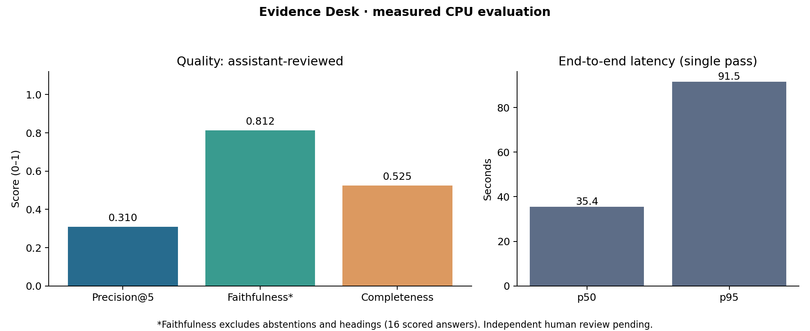

Local RAG · source audit · CPU evaluation
Evidence Desk
Trace AI governance answers back to their source passages.
Recorded showcase. These are saved outputs from a real
24-question run. This static page does not run a model or accept new questions.
The downloadable Python project provides the live local application.
Measured results, with the failures visible
Corpus: NIST AI RMF 1.0 (2023), one 48-page PDF. Model: Qwen2.5 1.5B Q4_K_M,
CPU-only, one exploratory pass on the build machine. These are not laptop timings.
Labels are assistant-reviewed; independent human review is pending.

Correct abstentions: 2/4. False abstentions: 4/20. Heading-only responses and abstentions do not inflate faithfulness.
Inspect the evidence
A supported action lookup
What does GOVERN 1.6 say about inventorying AI systems?
GOVERN 1.6: Mechanisms are in place to inventory AI systems and are resourced according to organizational risk priorities.
Evidence · PDF page 28
GOVERN 1.6: Mechanisms are in place to inventory AI systems
and are resourced according to organizational risk priorities.
Open source PDFA grounded answer that misses the question
What is reliability as described in the Framework?
The Framework should provide a catalog of outcomes and approaches rather than prescribe one-size-fits-all requirements.
Evidence · PDF page 47
7. Be outcome-focused and non-prescriptive. The Framework should provide a catalog of outcomes and approaches rather than prescribe one-size-fits-all requirements.
Open source PDFAn attribution error despite a valid quote
What does MANAGE 2.4 say about systems performing inconsistently with intended use?
MANAGE 2.4: Mechanisms are in place and applied, and responsibilities are assigned and understood, to supersede, disengage, or deactivate AI systems that demonstrate performance or outcomes inconsistent with intended use.
Evidence · PDF page 37
MANAGE 2.4: Mechanisms are in place and applied, and responsibilities are assigned and understood, to supersede, disengage, or
deactivate AI systems that demonstrate performance or outcomes
inconsistent with intended use.
Open source PDFMANAGE 2.5: The AI system to be deployed is demonstrated to be valid and reliable. Limitations of the generalizability beyond the conditions under which the technology was developed are documented.
Evidence · PDF page 34
MEASURE 2.5: The AI system to be deployed is demonstrated
to be valid and reliable. Limitations of the generalizability beyond the conditions under which the technology was developed
are documented.
Continued on next page
Page 29
Open source PDFA false abstention
Is AI RMF 1.0 voluntary or mandatory?
Abstained: Citation quote does not occur in retrieved text